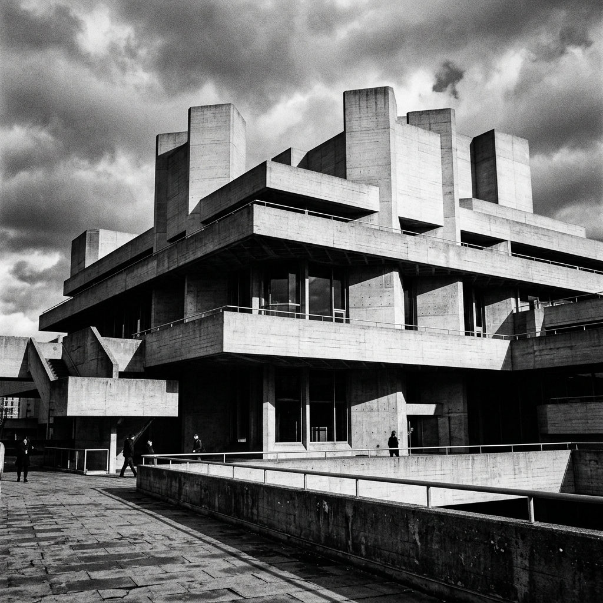

Né dans l'après-guerre, le brutalisme a longtemps été décrié pour son aspect froid et imposant. Aujourd'hui, il vit une véritable renaissance, porté par une nouvelle génération de créateurs qui magnifient le "béton brut".
Il n'est plus question des barres d'immeubles ternes des années 70, mais plutôt d'une architecture géométrique, sculpturale, presque poétique, où la lumière vient caresser les textures rugueuses du ciment.
Honnêteté des matériaux
Ce qui séduit dans le néo-brutalisme, c'est l'absence d'artifice. Il n'y a pas de peinture ni de papier peint pour cacher la structure. Le bâtiment s'expose tel qu'il est, avec les marques de ses coffrages et ses imperfections. Cette honnêteté brute résonne particulièrement à une époque saturée d'images filtrées.

La chaleur dans le brut
Pour contrecarrer la froideur inhérente au béton, les architectes contemporains le marient astucieusement avec des matériaux organiques comme le bois chaud, des textiles riches et des plantes luxuriantes. Le contraste qui en résulte est d'une grande sophistication.
Plus qu'un simple style, le brutalisme moderne s'affirme comme une déclaration d'indépendance esthétique, monumentale et inébranlable, qui prouve que l'on peut trouver de la grâce dans la robustesse absolue.
← Retour à l'accueil